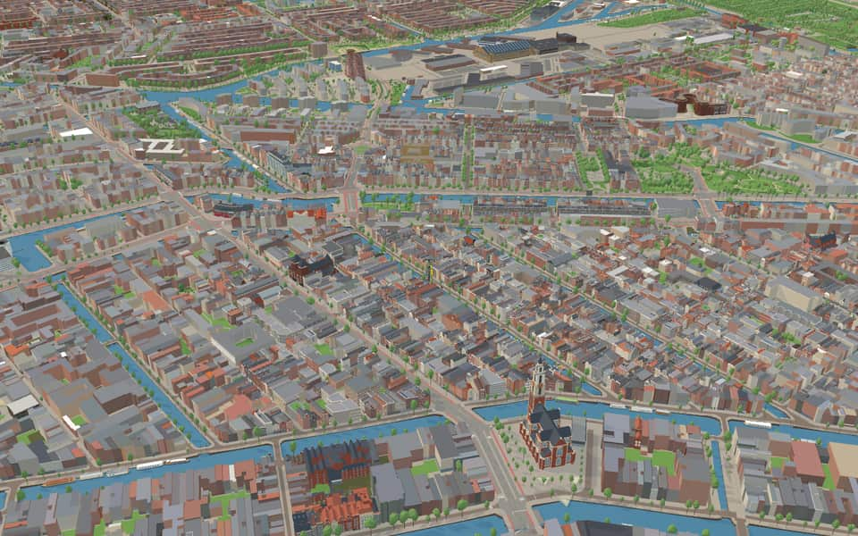
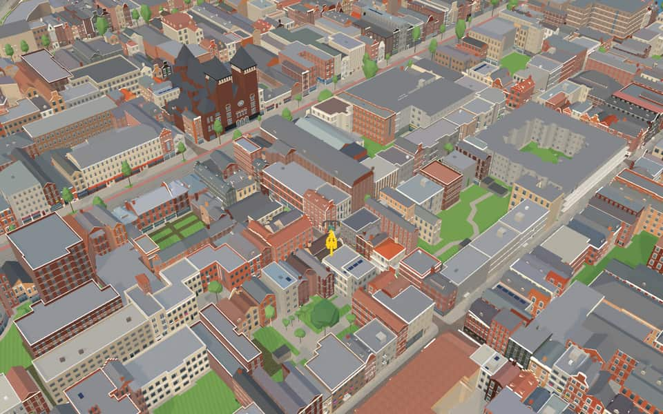
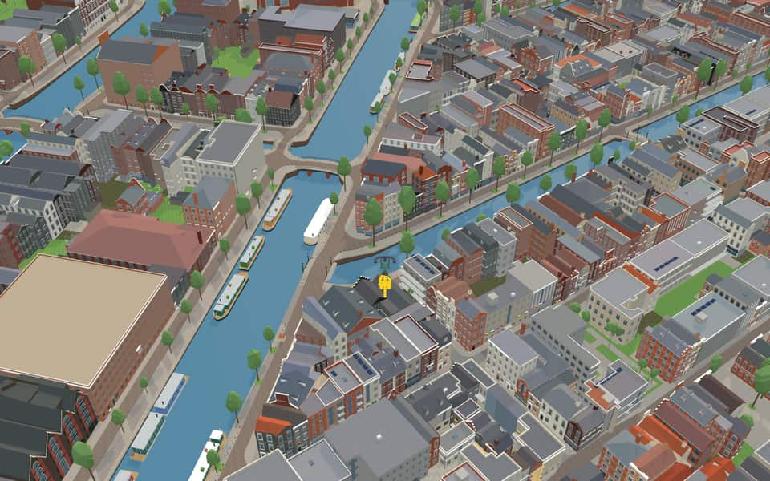
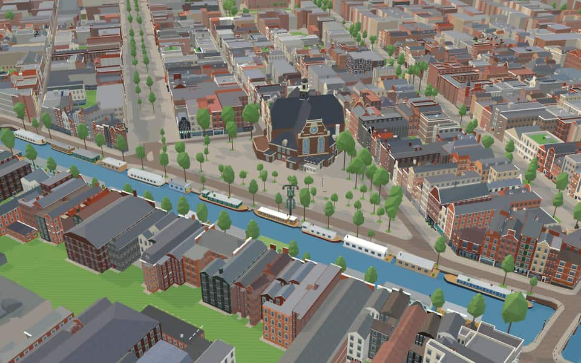
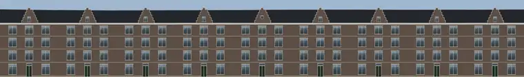
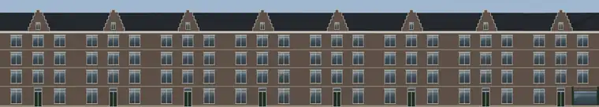

Quarter · Amsterdam
Jordaan
The Jordaan is a neighbourhood of the city of Amsterdam, Netherlands. It is part of the borough of Amsterdam-Centrum. The area is bordered by the Singelgracht canal and the neighbourhood of Frederik Hendrikbuurt to the west; the Prinsengracht to the east; the Brouwersgracht to the north and the Leidsegracht to the south. en.wikipedia.org
The name. The most common theory on the origin of the name posits derivation from the French word jardin (meaning garden); indeed, most streets and canals in the Jordaan are named after trees and flowers. en.wikipedia.org


In the game
Frames from a ride through Jordaan.




6 more photos of Jordaan


.jpg){kind=link}


_44.jpg){kind=link}


Built here
Buildings modelled one by one for the ride.
Boom Chicago / Rozentheater
Amsterdam Tulip Museum
Noorderkerk

Electric Ladyland — four-shop ensemble
Photo: Electric Ladyland museum entrance 2016.jpg (Robin Sheat -- Eythian, CC BY-SA 4.0)

Heilige Nikolaas van Myrakerk
Photo: Tichelkerk in de Tichelstraat.jpg (Alf van Beem, Public domain)

Theo Thijssen Museum
Photo: Voorgevel - Amsterdam - 20018893 - RCE.jpg (Han van Gool, CC BY-SA 4.0)
- No picture yet
Houseboat Museum (Hendrika Maria)
- No picture yet
Fatih Mosque

- No picture yet
Brandweerkazerne Hendrik
- No picture yet
Hoofdbureau van Politie
- No picture yet
Johnny Jordaanplein groep (Johnny Jordaan, Tante Leen, Johnny Meijer)
- No picture yet
Theo Thijssen monument (Lindengracht)
- No picture yet
Noorderkerk

Marnixstraat 122 to 106 (9 houses)

Marnixstraat 138 to 124 (8 houses)
- No picture yet
Europarking, Marnixstraat car park, with the Waterkant
- No picture yet
Marnixstraat 248, Amsterdam (Marnixstraat car park)
1972 white concrete parking garage of six decks on an open pillared undercroft, round ramp towers


Did you know
Trivia the ride can show you here.
- Construction of the Jordaan began in 1612; its streets follow older ditches and paths. Wikipedia
- Six canals were filled in during the 19th century, including the Rozengracht. Wikipedia
- On summer Sundays some of the Jordaan's hofjes, courtyards built by wealthy Amsterdammers to house elderly women, open for free concerts. The oldest surviving one is the Sint Andrieshofje (1614) on the Egelantiersgracht. English and Dutch Wikipedia
- Amsterdam Tulip MuseumThree Dutch bulbmen founded the museum, including a US distributor and a European supplier. en.wikipedia.org
- Amsterdam Tulip MuseumExhibits trace tulip history from the Himalayas to the court of Ottoman Sultan Suleiman the Magnificent. en.wikipedia.org
- Amsterdam Tulip MuseumThe collection explores the infamous 1630s market crash known as Tulip mania. en.wikipedia.org
- BevrijdingslindeIn 1984, the monument nearly vanished when a utility company planned to build an electricity shed there. nl.wikipedia.org
- Boom ChicagoIn 2008, the group celebrated its fifteenth anniversary in April. en.wikipedia.org
- Boom ChicagoOscar winner Jordan Peele created many shows at the venue before meeting Keegan-Michael Key there in 2002. en.wikipedia.org
- Boom ChicagoThe series Ted Lasso was created by three alumni who also wrote, starred in and directed the show. en.wikipedia.org
- FatihPrayer attendees now face the former main entrance where a mihrab was installed. nl.wikipedia.org
- Heilige Nikolaas van MyrakerkIn 2005 the site became known as Heilige Nikolaas van Myrakerk, or Saint Nicholas of Myra Church. nl.wikipedia.org
- Heilige Nikolaas van MyrakerkFollowing the 2022 invasion of Ukraine, this parish left the Moscow Patriarchate to join Constantinople. nl.wikipedia.org
- Heilige Nikolaas van MyrakerkThe Capuchin order purchased the land in 1910 for just 2,200 guilders to build a chapel. nl.wikipedia.org
82 more facts
- Houseboat MuseumResident Vincent van Loon founded the museum after noticing tourists peering curiously inside. en.wikipedia.org
- Houseboat MuseumRestorations returned the historic skipper's cabin at the ship's rear to its original condition. en.wikipedia.org
- Houseboat MuseumNew owners redecorated the living quarters in 1970s style to reflect the houseboat culture heyday. en.wikipedia.org
- Houseboat MuseumThe vessel housing the museum was built in 1914 as an inland ship. en.wikipedia.org
- NoorderkerkIllicit meetings for the 1941 February Strike were held on the square surrounding this church. en.wikipedia.org
- Pianola MuseumTheo de Boer and Kasper Janse founded the foundation that manages the collection in 1981. nl.wikipedia.org
- Theo Thijssen MuseumVisual artist Hans Bayens created the memorial stone and the statue on Lindengracht. nl.wikipedia.org
- ConstantiahofjeA dedicated foundation for these homes was established in 1863 as a subdivision. nl.wikipedia.org
- ConstantiahofjeOriginal one-room apartments were combined into larger units during renovation. nl.wikipedia.org
- ConstantiahofjeThe housing corporation managing these homes merged in 2014 to form Stichting Ymere. nl.wikipedia.org
- BaanbrugThe Baanbrug spans the Lijnbaansgracht, taking its name directly from that canal. nl.wikipedia.org
- BaanbrugIron girders were installed in May 1892, allowing traffic to cross by August of that year. nl.wikipedia.org
- Batavus DroogstoppelbrugPedestrians used an emergency shelter in May 1898 while the bridge underwent replacement work. nl.wikipedia.org
- Brug 117Piet Kramer likely designed its distinctive wrought iron balustrades in the Amsterdam School style. nl.wikipedia.org
- Brug 117Traffic demands forced a widening of the bridge during the winter of 1927 and 1928. nl.wikipedia.org
- Brug 118A permanent bridge replaced an earlier lifting version in 1884 to accommodate canal shipping. nl.wikipedia.org
- Brug 118A temporary metal emergency bridge was installed during renovations between 2009 and 2011. nl.wikipedia.org
- Brug 119A fixed bridge replaced a movable one in 1884, though it needed replacement again by 1903. nl.wikipedia.org
- Brug 126A version of this bridge likely existed since the canal was first dug. nl.wikipedia.org
- Brug 96Renovations widened the road to six meters with two distinct footpaths. nl.wikipedia.org
- BullebaksluisPiet Kramer, the city's bridge architect, designed this structure around 1930. nl.wikipedia.org
- BullebaksluisFreight and bus traffic were banned in March 2019 due to poor structural condition. nl.wikipedia.org
- BullebaksluisThe nearby square features a 1975 bronze sculpture of a female figure named Nieuwe Naatje. nl.wikipedia.org
- GroentemarktbrugEngineers specified a width of fifteen meters with a ten-meter passage and a height of 2.12 meters. nl.wikipedia.org
- KoekjesbrugThe name Koekjesbrug may stem from chocolate cookies sold at a nearby cocoa mill. nl.wikipedia.org
- KoekjesbrugThe oldest known written mention of the name Koekjesbrug appeared in April 1886. nl.wikipedia.org
- KoekjesbrugNearby buildings named De Krakeling and De Makroon explicitly reference the bridge. nl.wikipedia.org
- KoekjesbrugA ferry served this crossing from 1879 before a wooden footbridge arrived in 1884. nl.wikipedia.org
- Nieuwe-WercksbrugAmsterdam School architect Piet Kramer heavily influenced the bridge's aesthetic design. nl.wikipedia.org
- Oude KinkerbrugOude Kinkerbrug honors writer Johannes Kinker, continuing a local tradition of naming streets after authors. nl.wikipedia.org
- Oude KinkerbrugThe Appeltjesmarkt market square sits directly to the northeast of this crossing. nl.wikipedia.org
- Pieter GoemansbrugA wooden structure stood at this crossing as early as 1866, though its replacement status remains unclear. nl.wikipedia.org
- ReesluisReesluis means deer lock, named for local tanners who processed deer hides in the southern Jordaan. nl.wikipedia.org
- ReesluisA 2014 renovation gave the bridge a dark brick road surface with natural stone curb edges. nl.wikipedia.org
- RotterdammerbrugUnlike nearby bridges, Rotterdammerbrug is named after its origin city rather than its destination. nl.wikipedia.org
- RyckerbrugRyckerbrug carries the official designation of bridge number 167. nl.wikipedia.org
- TrapjesbrugDemonstrators completely demolished the bridge during the 1934 Jordaan uprising before rebuilding it later. nl.wikipedia.org
- BloemgrachtCartographer Willem Blaeu established his workshop here in 1635, producing the famous Atlas Maior. en.wikipedia.org
- BloemgrachtFourteen sugar factories operated along this canal during the eighteenth and nineteenth centuries. en.wikipedia.org
- BloemgrachtBridge number 120 at Derde Leliedwarsstraat bears the name Atlas Bridge. en.wikipedia.org
- BloemgrachtThe trio known as De Drie Hendricken at numbers 87, 89 and 91 was built in 1642. en.wikipedia.org
- BrouwersgrachtBrouwersgracht earned its name in 1594 from the many beer breweries found here. en.wikipedia.org
- BrouwersgrachtThe canal belt was dug southward from this waterway starting in 1612. en.wikipedia.org
- BrouwersgrachtMost warehouses built for goods storage were later converted into residential houses. en.wikipedia.org
- BrouwersgrachtOnly the 'Faith' remains of a former trio that also included Hope and Love. en.wikipedia.org
- EgelantiersgrachtOriginal houses were built on a smaller scale specifically for artisans and skilled tradespeople. en.wikipedia.org
- EgelantiersgrachtHouse number sixty-six was demolished during the Hunger Winter and later rebuilt between 1963 and 1964. en.wikipedia.org
- EgelantiersgrachtNarrow corridors between houses provided access to illegally built backyards where the less fortunate lived in dilapidated shelters. en.wikipedia.org
- Hugo de GrootgrachtThe canal and its embankments received the name Hugo de Grootgracht on March 30, 1881. nl.wikipedia.org
- Hugo de GrootgrachtA curved high bridge called Katterug connects Bilderdijkpark across the canal for pedestrians and cyclists. nl.wikipedia.org
- Hugo de GrootgrachtWhile most quays are named Hugo the Great Quay, the first southern part is called Da Costakade. nl.wikipedia.org
- Hugo de GrootgrachtA block at numbers 12 to 16 was designed by architect D.H. nl.wikipedia.org
- Jacob van LennepkanaalThe name Jacob van Lennepkanaal was officially established by council resolutions in 1892 and 1896. en.wikipedia.org
- Jacob van LennepkanaalA never-built metro line to Osdorp was once planned to run directly underneath this canal. en.wikipedia.org
- Jacob van LennepkanaalHouseboats are moored along quays officially named Jacob van Lennepkade. en.wikipedia.org
- Korte PrinsengrachtThe name Korte Prinsengracht derives from a nearby brewery called the Unicorn. nl.wikipedia.org
- Korte PrinsengrachtUntil 1872, this stretch of Korte Prinsengracht flowed openly into the Zuiderzee via the IJ. nl.wikipedia.org
- Korte PrinsengrachtA second preserved level stone was discovered in 2013 during the demolition of De Nieuwe Brug. nl.wikipedia.org
- LauriergrachtPainter George Hendrik Breitner ran a studio at number 8 from 1893 to 1898. en.wikipedia.org
- LauriergrachtFictional coffee broker Batavus Droogstoppel famously claimed to live at number 37 in Max Havelaar. en.wikipedia.org
- LeidsegrachtThe canal received its name, Leidsegracht, in 1658 after the city of Leiden. en.wikipedia.org
- LeidsegrachtHydraulic engineer Cornelis Lely was born at number 39 on this canal. en.wikipedia.org
- LijnbaansgrachtConstruction began in 1612 during the initial phase of building the canal belt. en.wikipedia.org
- LijnbaansgrachtThe canal runs parallel to the Singelgracht between the Brouwersgracht and Reguliersgracht. en.wikipedia.org
- LijnbaansgrachtA portion of this waterway has been filled in over time. en.wikipedia.org
- LooiersgrachtBridge 102 on Eerste Looiersdwarsstraat is a pedestrian municipal monument. en.wikipedia.org
- LooiersgrachtA cargo ship named MV Looiersgracht operates under the Spliethoff charter office. en.wikipedia.org
- LooiersgrachtA mechanical gallery called The Old Maze displayed rolling-eyed images of David and Goliath until 1862. en.wikipedia.org
- LooiersgrachtSilver smelter Anthoni Grill established his gold-testing facility here between 1651 and 1661. en.wikipedia.org
- PasseerdersgrachtThe Walengang alley between numbers 15 and 17 was demolished in 1850 to build a shelter for the needy. en.wikipedia.org
- PasseerdersgrachtArchitects Joan van der Mey and Piet Kramer designed the former Arbeidsbeurs around 1915 at number 28. en.wikipedia.org
- PasseerdersgrachtCircus Elleboog performed in this building until moving to Amsterdam-West in the summer of 2012. en.wikipedia.org
- PrinsengrachtMayor Frans Hendricksz Oetgens initiated construction in 1612. en.wikipedia.org
- PrinsengrachtThe eastern section was built later and named Nieuwe Prinsengracht. en.wikipedia.org
- PrinsengrachtSt. Van Brienens founded the Star at Prinsengracht 89–133. en.wikipedia.org
- PrinsengrachtPrinsengracht 849 holds the best-preserved copy of five identical neck gables from 1701. en.wikipedia.org
- SingelgrachtThe name Singelgracht derives from the Dutch word omsingelen, meaning to surround. en.wikipedia.org
- SingelgrachtStreets like Marnixkade line the inside while Nassaukade runs along the outside. en.wikipedia.org
- Nieuwe PasseerdersstraatThe name Nieuwe Passeerdersstraat honors past passageways where Spanish leather was processed. nl.wikipedia.org
- Nieuwe PasseerdersstraatCouncil officials officially named the street on January 20, 1886. nl.wikipedia.org
- Nieuwe PasseerdersstraatAn underground canal once ran beneath the street before being partially closed in 1975. nl.wikipedia.org
- Nieuwe PasseerdersstraatSingle men and women were once accommodated within this former nursing home complex. nl.wikipedia.org
Names on the map
Where the canal, bridge and street names come from.
Canals and water
- BloemgrachtMany streets and canals in the Jordaan are named after flowers. In this expansion of 1612, the Bloemgracht is probably the oldest canal. The canal ran to the Bolwerk de Bloem (later called Rijkeroord), after which it is named. From 1614 to 1878 the windmill 'De Blom' stood on the bastion; it was then moved to the Haarlemmerweg near the Nieuwpoortkade.
- BrouwersgrachtNamed after the many breweries found in this neighbourhood in the sixteenth and seventeenth centuries. The prefixes Binnen (inner) and Buiten (outer) refer to the location in relation to the Haarlemmerdijk.
- EgelantiersgrachtNamed after the shrub berberis (barberry).
- Hugo de GrootgrachtHumanist (1584-1645), founder of international law. As a leader of the Remonstrants he was drawn into church disputes and imprisoned at Loevestein on the orders of Prince Maurice. He escaped from there in a book chest in 1621.
- Jacob van LennepkanaalProse writer (1802-1868), mainly of historical novels, among them 'De roos van Dekama' and 'Ferdinand Huyck'.
- Korte PrinsengrachtAfter 'the princely title', meaning that of the Princes of Orange. The canal is one of the three main canals, and the plainest in the character of its buildings. It was dug in the expansion of 1612 and built up from the Brouwersgracht to the Leidsegracht. In the expansion of 1658 this canal too was extended across the Amstel (as far as the Entrepotdok). The first side street after the Brouwersgracht became the Prinsenstraat. The name Prinsenmarkt for today's Noordermarkt never caught on with the citizens.
- LauriergrachtThe southern European ornamental tree (the laurel).
- LeidsegrachtThe city of Leiden. All these streets date from the great city expansion of 1658. The Leidsestraat got its name because it led to the Leidsepoort (Leiden gate). It is part of the old Heiligeweg.
- LijnbaansgrachtThe ropewalks (lijnbanen) of the ropemakers. The Lijnbaanssteeg dates from the fifteenth century, when the Singel was the outermost canal. A ropemaker needed a fairly large site for his trade, which could only be found on the edge of the city. The ropewalks lay on the city side of the moat, so inside the rampart. The Lijnbaansgracht ran right round the city. It has since been filled in in several places and there has taken other names, such as Leidseplein, Kleine-Gartmanplantsoen, Frederiksplein, Maarten Jansz. Kosterstraat, Valckenierstraat and Plantage Muidergracht.
- LooiersgrachtThe tanneries and the hide trade, after which this street and nearby streets in the Jordaan and the canal ring are named, were at first sited outside the city in the sixteenth century. When the area gradually came inside the city and streets were laid out here, they were named after these long-flourishing trades, starting with the Runstraat (run is tanbark) and the Huidenstraat (hides street). After 1658 the tanneries spread to land east of the Vijzelgracht, where the Nieuwe Looiersstraat and dwarsstraat are now. Before it was filled in, the Derde Looiersdwarsstraat was the Oude Looierssloot (council decision of 1 June 1898).
- PasseerdersgrachtPasseren is the preparing and working of Spanish leather. When this kind of leatherwork was banned in central Amsterdam in 1631, the passeerderij settled here, next to the tanneries already there.
- PrinsengrachtAfter 'the princely title', meaning that of the Princes of Orange. The canal is one of the three main canals, and the plainest in the character of its buildings. It was dug in the expansion of 1612 and built up from the Brouwersgracht to the Leidsegracht. In the expansion of 1658 this canal too was extended across the Amstel (as far as the Entrepotdok). The first side street after the Brouwersgracht became the Prinsenstraat. The name Prinsenmarkt for today's Noordermarkt never caught on with the citizens.
1 more canal with a story
- SingelgrachtA singel is a stretch of water or a road along the outer edge of a town. In Amsterdam the Singel (Amsterdammers say 'het Singel') formed the city boundary in the second half of the fifteenth century, inside which the walls and gates were built. At that time the moat was called 't Singel or the Stedegracht (now the Singel, Kloveniersburgwal and Geldersekade). Today's Singel has kept the old name. In the seventeenth century the city government did introduce the name Koningsgracht for it, but that name did not stick.
1 other canal without a recorded story
Doorvaart P-Q
Bridges
- Atlas MaiorbrugNamed after the Atlas Maior, which Joan Blaeu produced in 1662 on the Bloemgracht. In 1672 this workshop burned out completely.Bridge 120: a steel bridge for road traffic, dated 1868 in the city's bridge register.
- BaanbrugThis bridge is named after the Lijnbaansgracht, which used to be called the Baangracht.Bridge 107: a steel bridge for road traffic, dated 2010 in the city's bridge register.
- Batavus DroogstoppelbrugBatavus Droogstoppel is a fictional character in Multatuli's Max Havelaar. He is a coffee broker at Lauriergracht 37. Multatuli portrays him as a 'wretched product of filthy greed and blasphemous sanctimony'.Bridge 111: a steel bridge for road traffic, dated 1898 in the city's bridge register.
- Berta de VriesbrugLuberta de Hondt de Vries, known as Berta de Vries (Amsterdam, 23 January 1885 – Amsterdam, 19 April 1959), was active in the revolutionary socialist women's movement, the Communistische Partij in Nederland and the Amsterdams Speeltuinverbond.Bridge 128: a steel bridge for road traffic, dated 1863 in the city's bridge register.
- Brug 117Bridge 117: a steel bridge for road traffic, dated 1890 in the city's bridge register.
- Brug 118Bridge 118: a steel bridge for road traffic, dated 1883 in the city's bridge register.
- Brug 119Bridge 119: a steel bridge for road traffic, dated 1899 in the city's bridge register.
- Brug 126Bridge 126: a steel bridge for road traffic, dated 1865 in the city's bridge register.
- Brug 127Bridge 127: a steel bridge for road traffic, dated 1883 in the city's bridge register.
- Brug 142Bridge 142: a movable steel bridge.
- Brug 66Bridge 66: a steel bridge for road traffic, dated 1756 in the city's bridge register.
- Brug 96Bridge 96: a steel bridge for road traffic, dated 1835 in the city's bridge register.
17 more bridges with a story
- Brug 98Bridge 98: a steel bridge for road traffic, dated 1927 in the city's bridge register.
- BullebaksluisThe bullebak (bogeyman) was a mythical water ghost, which not only roamed around the old sluice gate near the Haarlemmerplein, but also under the stone vault that connected the Bloemgracht with the Buitensingel (bridge 160). According to tradition, the monster lay there waiting to pull passersby who dared to venture too close to the water into the water.Bridge 160: a steel bridge for road traffic, dated 1845 in the city's bridge register.
- GroentemarktbrugNamed after the vegetable market held near here until 1934. In that year the trade moved to the Centrale Markthallen.Bridge 156: a steel bridge for road traffic, dated 1892 in the city's bridge register.
- Hilletjes BrugThis fixed bridge probably owes its name to a Miss Hilletje from the Egelantiers neighborhood, who often walked across this bridge.Bridge 125: a steel bridge for road traffic, dated 1865 in the city's bridge register.
- KoekjesbrugThere are four possible explanations for the name of this fixed bridge. It may be named after a popular biscuit (koekjes) seller who was pushed into the mud here by jostling youths. There also used to be a small cocoa mill here where cocoa biscuits were sold. The name may also go back to the market gardener Pannenkoek, who once owned land next to the bridge. A fourth possibility is that it is named after a policeman called Koek, who just before the bridge opened walked across it demonstratively after a quarrel with the ferryman. The ferryman is then said to have written on the bridge railing 'Deze brug is gedoopt Koekjesbrug' (this bridge is christened Koekjesbrug).Bridge 170: a steel bridge for road traffic, dated 1911 in the city's bridge register.
- LekkeresluisThere used to be stalls by this fixed bridge where, among other things, a 'pannenkoek van de Lekkeresluis' (pancake of the tasty lock) was baked.Bridge 59: a brick bridge for road traffic, dated 1754 in the city's bridge register.
- LeliesluisThe name of this fixed bridge comes from the canal it lies on. That canal in turn is named after the Oude Leliestraat, mentioned as early as 1560, which took its name from the house 'In de Witte Lelye' (in the white lily) on the Singel by the Torensluis.Bridge 61: a steel bridge for road traffic, dated 1841 in the city's bridge register.
- Nieuwe-WercksbrugNamed after the original name of today's Jordaan (the Nieuwe Werck, the new works).Bridge 63: a steel bridge for road traffic, dated 1891 in the city's bridge register.
- Oude KinkerbrugJohannes Kinker (1764-1845) was a Dutch poet, philosopher and lawyer.Bridge 169: a steel bridge for road traffic, dated 1954 in the city's bridge register.
- Pieter GoemansbrugOn this fixed bridge Pieter Goemans (Peter Shott), who lived from 1925 to 2000, found the inspiration in the 1950s for his song 'Aan de Amsterdamse grachten' (on the Amsterdam canals). A plaque on the bridge recalls this.Bridge 93: a steel bridge for road traffic, dated 1895 in the city's bridge register.
- PrinsensluisThis fixed bridge is named after the street it lies in and the canal it crosses. Prins here refers to the princely title, meaning that of the Princes of Orange.Bridge 60: a steel bridge for road traffic, dated 1767 in the city's bridge register.
- ReesluisThis fixed bridge is named after the Reestraat, in which it lies.Bridge 64: a steel bridge for road traffic, dated 1778 in the city's bridge register.
- Rosa OverbeekbrugThis fixed bridge is named after Rosa Overbeek, a character in the novels of Theo Thijssen (1879-1943). She is the girlfriend of Kees de jongen (Kees the boy), after whom bridge 123 is named.Bridge 121: a steel bridge for road traffic, dated 1883 in the city's bridge register.
- RotterdammerbrugAfter the city of Rotterdam.Bridge 150: a steel bridge for cyclists, dated 1975 in the city's bridge register.
- RyckerbrugBridge 167: a steel bridge for road traffic, dated 1892 in the city's bridge register.
- Tetje de JongbrugTheodora (Tetje) de Jong (Uithoorn, 2 May 1918 - Drachten, 21 January 1999) was the first salaried woman police commissioner in the Netherlands. In 1954, the year the first women joined the uniformed service of the Amsterdam police, De Jong was appointed chief inspector. On 1 January 1964 she was officially appointed commissioner of police in Amsterdam. In 1977, for her great importance to the Amsterdam police, she received a royal honour as an Officer of the Order of Orange-Nassau.Bridge 100: a steel bridge for road traffic, dated 1927 in the city's bridge register.
- TrapjesbrugBridge 130: a steel bridge for pedestrians, dated 1921 in the city's bridge register.
1 other bridge without a recorded story
Kleine Brouwerssluis
Streets
- AkoleienstraatThe akolei (columbine) is a flower of the buttercup family.
- AnjeliersstraatAn anjelier (carnation) is a flower belonging to the pink family.
- Atlas MaiorbrugNamed after the Atlas Maior, which Joan Blaeu produced in 1662 on the Bloemgracht. In 1672 this workshop burned out completely.
- BaanbrugThis bridge is named after the Lijnbaansgracht, which used to be called the Baangracht.
- BerensluisThis fixed bridge is named after the Berenstraat, on which it lies. In the seventeenth century, the tanneries and the hide trade were located in the adjacent part of what is now the Jordaan.
- BerenstraatIn the seventeenth century, the tanneries and the hide trade were located in the adjacent part of what is now the Jordaan. This trade included bearskins.
- Binnen DommersstraatThe owner of the land on which the street was laid out was IJsbrand Jansz. Dommer. He was a ropemaker and a member of the council, and in 1579 he was appointed schepen (magistrate) of the city. Binnen (inner) and Buiten (outer) refer to the location, inside and outside the Haarlemmerdijk.
- BloemgrachtMany streets and canals in the Jordaan are named after flowers. In this expansion of 1612, the Bloemgracht is probably the oldest canal. The canal ran to the Bolwerk de Bloem (later called Rijkeroord), after which it is named. From 1614 to 1878 the windmill 'De Blom' stood on the bastion; it was then moved to the Haarlemmerweg near the Nieuwpoortkade.
- BloemstraatMany streets and canals in the Jordaan are named after flowers. In this expansion of 1612, the Bloemgracht is probably the oldest canal. The canal ran to the Bolwerk de Bloem (later called Rijkeroord), after which it is named. From 1614 to 1878 the windmill 'De Blom' stood on the bastion; it was then moved to the Haarlemmerweg near the Nieuwpoortkade.
- BoomstraatIn this part of the Jordaan, streets are named after flowers, shrubs and trees. In the seventeenth century, the street was also called Lindeboomstraat.
- BrouwersgrachtNamed after the many breweries found in this neighbourhood in the sixteenth and seventeenth centuries. The prefixes Binnen (inner) and Buiten (outer) refer to the location in relation to the Haarlemmerdijk.
- BullebakThe bullebak was a mythical water bogeyman that haunted not only the old little lock near the Haarlemmerplein but also the stone vault that joined the Bloemgracht to the Buitensingel (bridge 160). According to legend, the monster lay in wait there to drag into the water any passer-by who ventured too close to the edge.
97 more streets with a story
- Derde EgelantiersdwarsstraatNamed after the shrub berberis (barberry).
- Derde GoudsbloemdwarsstraatThe flower (the marigold), of the daisy family.
- Derde LeliedwarsstraatAll these streets are named after the oldest of them, the Oude Leliestraat, already mentioned in 1560. It takes its name from the house 'In de witte lelye' (in the white lily) on the Singel near the Jan Rodenpoortstoren (Torensluis). After 1612 the name passed to the canal dug in line with it, and finally to the Nieuwe Leliestraat and cross streets in the Jordaan.
- Derde LooiersdwarsstraatThe tanneries and the hide trade, after which this street and nearby streets in the Jordaan and the canal ring are named, were at first sited outside the city in the sixteenth century. When the area gradually came inside the city and streets were laid out here, they were named after these long-flourishing trades, starting with the Runstraat (run is tanbark) and the Huidenstraat (hides street). After 1658 the tanneries spread to land east of the Vijzelgracht, where the Nieuwe Looiersstraat and dwarsstraat are now. Before it was filled in, the Derde Looiersdwarsstraat was the Oude Looierssloot (council decision of 1 June 1898).
- Derde MarnixdwarsstraatPhilips of Marnix, Lord of Sint-Aldegonde (1538-1598), friend and adviser of Prince William of Orange, drafter of the Compromise of Nobles (1568) and possibly the poet of the Wilhelmus. The Marnixstraat, previously called Schans, was laid out after 1850 where the city ramparts had stood, which were levelled between 1820 and 1840.
- DriehoekstraatLaid out in the middle of the seventeenth century. The name (triangle street) comes from the shape of the street.
- Eerste AnjeliersdwarsstraatAn anjelier (carnation) is a flower belonging to the pink family.
- Eerste BloemdwarsstraatMany streets and canals in the Jordaan are named after flowers. In this expansion of 1612, the Bloemgracht is probably the oldest canal. The canal ran to the Bolwerk de Bloem (later called Rijkeroord), after which it is named. From 1614 to 1878 the windmill 'De Blom' stood on the bastion; it was then moved to the Haarlemmerweg near the Nieuwpoortkade.
- Eerste BoomdwarsstraatIn this part of the Jordaan, streets are named after flowers, shrubs and trees. In the seventeenth century, the street was also called Lindeboomstraat.
- Eerste EgelantiersdwarsstraatNamed after the shrub berberis (barberry).
- Eerste GoudsbloemdwarsstraatThe flower (the marigold), of the daisy family.
- Eerste LaurierdwarsstraatThe southern European ornamental tree (the laurel).
- Eerste LeliedwarsstraatAll these streets are named after the oldest of them, the Oude Leliestraat, already mentioned in 1560. It takes its name from the house 'In de witte lelye' (in the white lily) on the Singel near the Jan Rodenpoortstoren (Torensluis). After 1612 the name passed to the canal dug in line with it, and finally to the Nieuwe Leliestraat and cross streets in the Jordaan.
- Eerste LindendwarsstraatThe deciduous tree: a beuk is a beech.
- Eerste LooiersdwarsstraatThe tanneries and the hide trade, after which this street and nearby streets in the Jordaan and the canal ring are named, were at first sited outside the city in the sixteenth century. When the area gradually came inside the city and streets were laid out here, they were named after these long-flourishing trades, starting with the Runstraat (run is tanbark) and the Huidenstraat (hides street). After 1658 the tanneries spread to land east of the Vijzelgracht, where the Nieuwe Looiersstraat and dwarsstraat are now. Before it was filled in, the Derde Looiersdwarsstraat was the Oude Looierssloot (council decision of 1 June 1898).
- Eerste MarnixdwarsstraatPhilips of Marnix, Lord of Sint-Aldegonde (1538-1598), friend and adviser of Prince William of Orange, drafter of the Compromise of Nobles (1568), and possibly the poet of the Wilhelmus. The Marnixstraat, previously called Schans, was laid out after 1850 where the city ramparts had stood, which were levelled between 1820 and 1840.
- Eerste MarnixplantsoenPhilips of Marnix, Lord of Sint-Aldegonde (1538-1598), friend and adviser of Prince William of Orange, drafter of the Compromise of Nobles (1568), and possibly the poet of the Wilhelmus. The Marnixstraat, previously called Schans, was laid out after 1850 where the city ramparts had stood, which were levelled between 1820 and 1840.
- Eerste PasseerdersdwarsstraatPasseren is the preparing and working of Spanish leather. When this kind of leatherwork was banned in central Amsterdam in 1631, the passeerderij settled here, next to the tanneries already there.
- Eerste RozendwarsstraatThe flower (the rose).
- Eerste TuindwarsstraatTuin (garden) here means a yard or enclosed space. The street name comes from the Stadstimmertuin (the city's carpentry yard, the Stadswerf), which lay here from 1612 to 1660 (by the Lijnbaansgracht) and to which the street led.
- EgelantiersgrachtNamed after the shrub berberis (barberry).
- EgelantiersstraatNamed after the shrub berberis (barberry).
- ElandsgrachtThis neighbourhood once had many tanneries, where the hides of elk (elanden), deer, bears and so on were worked.
- ElandsstraatThis neighbourhood once had many tanneries, where the hides of elk (elanden), deer, bears and so on were worked.
- GietersstraatNamed after 't Giethuis, the city's gun and bell foundry, which stood here from 1614 to 1821. The street name first came into use in the eighteenth century.
- GoudsbloemstraatThe flower (the marigold), of the daisy family.
- GroenmarktkadeGroenmarkt is short for Groentemarkt (vegetable market), held here from 1896 to 1934. In 1934 the Centrale Markthallen opened on the Jan van Galenstraat, after which this vegetable market was closed.
- HazenstraatThe hare, a rodent. The name was given because of this animal's skin. The street lies near the old tanners and the hide trade.
- KarthuizersdwarsstraatThe streets were laid out where the monastery of the 'Carthuysers ter saliger havene' (Carthusians of the blessed haven) stood from 1394 to 1578. Until 1892 the cross street was called Blindemansteeg, but the name was changed because of confusion with the other Blindemansteeg. The path and playground are on the site of the monastery's former graveyard, which is why the park was called Karthuizer Kerkhof until 1889.
- KarthuizersplantsoenThe streets were laid out where the monastery of the 'Carthuysers ter saliger havene' (Carthusians of the blessed haven) stood from 1394 to 1578. Until 1892 the cross street was called Blindemansteeg, but the name was changed because of confusion with the other Blindemansteeg. The path and playground are on the site of the monastery's former graveyard, which is why the park was called Karthuizer Kerkhof until 1889.
- KarthuizersstraatThe streets were laid out where the monastery of the 'Carthuysers ter saliger havene' (Carthusians of the blessed haven) stood from 1394 to 1578. Until 1892 the cross street was called Blindemansteeg, but the name was changed because of confusion with the other Blindemansteeg. The path and playground are on the site of the monastery's former graveyard, which is why the park was called Karthuizer Kerkhof until 1889.
- KonijnenstraatThe rodent (the rabbit). The name arose from the trade in hides and skins carried on in this part of the city.
- Kromme PalmstraatThe tree (palm). The Palmgracht was filled in in 1895.
- LauriergrachtThe southern European ornamental tree (the laurel).
- LaurierstraatThe southern European ornamental tree (laurel). (The canal was dug on the site of the old Kaatsbaanpad.)
- LeidsegrachtThe city of Leiden. All these streets date from the great city expansion of 1658. The Leidsestraat got its name because it led to the Leidsepoort (Leiden gate). It is part of the old Heiligeweg.
- LeidsekadeThe city of Leiden. All these streets date from the great city expansion of 1658. The Leidsestraat got its name because it led to the Leidsepoort (Leiden gate). It is part of the old Heiligeweg.
- LekkeresluisThere used to be stalls by this fixed bridge where, among other things, a 'pannenkoek van de Lekkeresluis' (pancake of the tasty lock) was baked.
- LeliesluisThe name of this fixed bridge comes from the canal it lies on. That canal in turn is named after the Oude Leliestraat, mentioned as early as 1560, which took its name from the house 'In de Witte Lelye' (in the white lily) on the Singel by the Torensluis.
- LijnbaansgrachtThe ropewalks (lijnbanen) of the ropemakers. The Lijnbaanssteeg dates from the fifteenth century, when the Singel was the outermost canal. A ropemaker needed a fairly large site for his trade, which could only be found on the edge of the city. The ropewalks lay on the city side of the moat, so inside the rampart. The Lijnbaansgracht ran right round the city. It has since been filled in in several places and there has taken other names, such as Leidseplein, Kleine-Gartmanplantsoen, Frederiksplein, Maarten Jansz. Kosterstraat, Valckenierstraat and Plantage Muidergracht.
- LindengrachtThe deciduous tree: a beuk is a beech.
- LindenstraatThe broadleaf tree (the lime or linden).
- LooiersgrachtThe tanneries and the hide trade, after which this street and nearby streets in the Jordaan and the canal ring are named, were at first sited outside the city in the sixteenth century. When the area gradually came inside the city and streets were laid out here, they were named after these long-flourishing trades, starting with the Runstraat (run is tanbark) and the Huidenstraat (hides street). After 1658 the tanneries spread to land east of the Vijzelgracht, where the Nieuwe Looiersstraat and dwarsstraat are now. Before it was filled in, the Derde Looiersdwarsstraat was the Oude Looierssloot (council decision of 1 June 1898).
- MadelievenstraatThe little wild flower (the daisy), of the daisy family.
- MarnixkadePhilips of Marnix, Lord of Sint-Aldegonde (1538-1598), friend and adviser of Prince William of Orange, drafter of the Compromise of Nobles (1568), and possibly the poet of the Wilhelmus. The Marnixstraat, previously called Schans, was laid out after 1850 where the city ramparts had stood, which were levelled between 1820 and 1840.
- MarnixpleinPhilips of Marnix, Lord of Sint-Aldegonde (1538-1598), friend and adviser of Prince William of Orange, drafter of the Compromise of Nobles (1568), and possibly the poet of the Wilhelmus. The Marnixstraat, previously called Schans, was laid out after 1850 where the city ramparts had stood, which were levelled between 1820 and 1840.
- MarnixstraatPhilips of Marnix, Lord of Sint-Aldegonde (1538-1598), friend and adviser of Prince William of Orange, drafter of the Compromise of Nobles (1568), and possibly the poet of the Wilhelmus. The Marnixstraat, previously called Schans, was laid out after 1850 where the city ramparts had stood, which were levelled between 1820 and 1840.
- Nieuwe EgelantiersstraatNamed after the shrub berberis (barberry).
- Nieuwe GietersstraatNamed after 't Giethuis, the city's gun and bell foundry, which stood here from 1614 to 1821. The street name first came into use in the eighteenth century.
- Nieuwe LeliestraatAll these streets are named after the oldest of them, the Oude Leliestraat, already mentioned in 1560. It takes its name from the house 'In de witte lelye' (in the white lily) on the Singel near the Jan Rodenpoortstoren (Torensluis). After 1612 the name passed to the canal dug in line with it, and finally to the Nieuwe Leliestraat and cross streets in the Jordaan.
- Nieuwe PasseerdersstraatPasseren is the preparing and working of Spanish leather. When this kind of leatherwork was banned in central Amsterdam in 1631, the passeerderij settled here, next to the tanneries already there.
- Nieuwe TuinstraatTuin (garden) here means a yard or enclosed space. The street name comes from the Stadstimmertuin (the city's carpentry yard, the Stadswerf), which lay here from 1612 to 1660 (by the Lijnbaansgracht) and to which the street led.
- Nieuwe WillemsstraatThis is the continuation of the Willemsstraat. This name too was originally set with a single s.
- Nieuwe-WercksbrugNamed after the original name of today's Jordaan (the Nieuwe Werck, the new works).
- NoorderkerkstraatThe Noorderkerk, a Protestant cruciform church built in 1623 by Cornelis Danckertsz.
- NoordermarktAfter the Noorderkerk. Until 1655 the square was largely taken up by the church's graveyard. In that year and the following ones the graveyards were moved to a site outside the city. The market square was officially first named Prinsenmarkt (after the Prinsengracht), but that name did not last.
- OranjebrugThis drawbridge takes its name from the street it lies in. The origin of the street name is uncertain; it may refer to the house 'de Prins van Oranje' that once stood here near the Haarlemmerdijk.
- Oude KinkerbrugJohannes Kinker (1764-1845) was a Dutch poet, philosopher and lawyer.
- Oude LooiersstraatThe tanneries and the hide trade, after which this street and nearby streets in the Jordaan and the canal ring are named, were at first sited outside the city in the sixteenth century. When the area gradually came inside the city and streets were laid out here, they were named after these long-flourishing trades, starting with the Runstraat (run is tanbark) and the Huidenstraat (hides street). After 1658 the tanneries spread to land east of the Vijzelgracht, where the Nieuwe Looiersstraat and dwarsstraat are now. Before it was filled in, the Derde Looiersdwarsstraat was the Oude Looierssloot (council decision of 1 June 1898).
- PalmdwarsstraatRefers to the palm tree.
- PalmgrachtRefers to the palm tree.
- PalmstraatRefers to the palm tree.
- PasseerdersgrachtPasseren is the preparing and working of Spanish leather. When this kind of leatherwork was banned in central Amsterdam in 1631, the passeerderij settled here, next to the tanneries already there.
- PasseerdersstraatPasseren is the preparing and working of Spanish leather. When this kind of leatherwork was banned in central Amsterdam in 1631, the passeerderij settled here, next to the tanneries already there.
- PrinsengrachtAfter 'the princely title', meaning that of the Princes of Orange. The canal is one of the three main canals, and the plainest in the character of its buildings. It was dug in the expansion of 1612 and built up from the Brouwersgracht to the Leidsegracht. In the expansion of 1658 this canal too was extended across the Amstel (as far as the Entrepotdok). The first side street after the Brouwersgracht became the Prinsenstraat. The name Prinsenmarkt for today's Noordermarkt never caught on with the citizens.
- PrinsensluisThis fixed bridge is named after the street it lies in and the canal it crosses. Prins here refers to the princely title, meaning that of the Princes of Orange.
- RaamdwarsstraatThe cloth frames (lakenramen), on which dyed cloth was hung to dry, had to stand outside the city. When the Kloveniersburgwal was still the city moat, these frames stood level with today's Raamgracht. The nearby Verversstraat (dyers' street) also recalls this old Amsterdam industry.
- RaampleinThe cloth frames (lakenramen) moved here when the area between the Kloveniersburgwal and the Zwanenburgwal was brought within the city in the sixteenth-century expansions. The Raamplein was made by filling in a stretch of the Lijnbaansgracht.
- RaampoortThis bridge is named after the Raampoort (gate), demolished in 1844.
- RaamstraatThe cloth frames (lakenramen) moved here when the area between the Kloveniersburgwal and the Zwanenburgwal was brought within the city in the sixteenth-century expansions. The Raamplein was made by filling in a stretch of the Lijnbaansgracht.
- ReesluisThis fixed bridge is named after the Reestraat, in which it lies.
- ReestraatA kind of deer (ree = roe deer). The name recalls the trade in hides, concentrated in this neighbourhood before the street was laid out, and later in the nearby southern part of the Jordaan.
- Rosa OverbeekbrugThis fixed bridge is named after Rosa Overbeek, a character in the novels of Theo Thijssen (1879-1943). She is the girlfriend of Kees de jongen (Kees the boy), after whom bridge 123 is named.
- RotterdammerbrugAfter the city of Rotterdam.
- RozengrachtThe flower (the rose). The Rozengracht was filled in in 1895.
- RozenstraatThe flower (the rose), like the nearby Rozengracht.
- SlootstraatThe street was laid out in 1660 on a filled-in ditch (sloot) by the former City Carpentry Yard.
- Tetje de JongbrugTheodora (Tetje) de Jong (Uithoorn, 2 May 1918 - Drachten, 21 January 1999) was the first salaried woman police commissioner in the Netherlands. In 1954, the year the first women joined the uniformed service of the Amsterdam police, De Jong was appointed chief inspector. On 1 January 1964 she was officially appointed commissioner of police in Amsterdam. In 1977, for her great importance to the Amsterdam police, she received a royal honour as an Officer of the Order of Orange-Nassau.
- TichelstraatNamed after the many tile and brick works (tichelbakkerijen) here in the seventeenth and eighteenth centuries.
- TuinstraatTuin (garden) here means a yard or enclosed space. The street name comes from the Stadstimmertuin (the city's carpentry yard, the Stadswerf), which lay here from 1612 to 1660 (by the Lijnbaansgracht) and to which the street led.
- Tweede AnjeliersdwarsstraatAn anjelier (carnation) is a flower belonging to the pink family.
- Tweede BloemdwarsstraatMany streets and canals in the Jordaan are named after flowers. In this expansion of 1612, the Bloemgracht is probably the oldest canal. The canal ran to the Bolwerk de Bloem (later called Rijkeroord), after which it is named. From 1614 to 1878 the windmill 'De Blom' stood on the bastion; it was then moved to the Haarlemmerweg near the Nieuwpoortkade.
- Tweede BoomdwarsstraatIn this part of the Jordaan, streets are named after flowers, shrubs and trees. In the seventeenth century, the street was also called Lindeboomstraat.
- Tweede EgelantiersdwarsstraatNamed after the shrub berberis (barberry).
- Tweede GoudsbloemdwarsstraatThe flower (the marigold), of the daisy family.
- Tweede LaurierdwarsstraatThe southern European ornamental tree (the laurel).
- Tweede LeliedwarsstraatAll these streets are named after the oldest of them, the Oude Leliestraat, already mentioned in 1560. It takes its name from the house 'In de witte lelye' (in the white lily) on the Singel near the Jan Rodenpoortstoren (Torensluis). After 1612 the name passed to the canal dug in line with it, and finally to the Nieuwe Leliestraat and cross streets in the Jordaan.
- Tweede LindendwarsstraatThe deciduous tree: a beuk is a beech.
- Tweede LooiersdwarsstraatThe tanneries and the hide trade, after which this street and nearby streets in the Jordaan and the canal ring are named, were at first sited outside the city in the sixteenth century. When the area gradually came inside the city and streets were laid out here, they were named after these long-flourishing trades, starting with the Runstraat (run is tanbark) and the Huidenstraat (hides street). After 1658 the tanneries spread to land east of the Vijzelgracht, where the Nieuwe Looiersstraat and dwarsstraat are now. Before it was filled in, the Derde Looiersdwarsstraat was the Oude Looierssloot (council decision of 1 June 1898).
- Tweede MarnixplantsoenPhilips of Marnix, Lord of Sint-Aldegonde (1538-1598), friend and adviser of Prince William of Orange, drafter of the Compromise of Nobles (1568), and possibly the poet of the Wilhelmus. The Marnixstraat, previously called Schans, was laid out after 1850 where the city ramparts had stood, which were levelled between 1820 and 1840.
- Tweede PasseerdersdwarsstraatPasseren is the preparing and working of Spanish leather. When this kind of leatherwork was banned in central Amsterdam in 1631, the passeerderij settled here, next to the tanneries already there.
- Tweede RozendwarsstraatThe flower (the rose).
- Tweede TuindwarsstraatTuin (garden) here means a yard or enclosed space. The street name comes from the Stadstimmertuin (the city's carpentry yard, the Stadswerf), which lay here from 1612 to 1660 (by the Lijnbaansgracht) and to which the street led.
- ViolettenstraatAn old name for the flower the violet.
- WesterkadeThe quay is on the west side of the Lijnbaansgracht, which is probably the reason for the name.
- WesterstraatThe name was given in 1861, when the Anjeliersgracht, as the street was previously called, was filled in. Why it became Westerstraat cannot be traced.
- WillemsstraatKing William I (1772-1843). The Goudsbloemgracht was filled in in 1857. For the opening of the new street this created (which coincided with the then still widely known birthday of the former king, 24 August), a celebration was held and the filled-in Goudsbloemgracht was named Willemstraat. The second s crept into the name after 1909; since 1918 the name has appeared with a double s.
14 other streets without a recorded story
Anslo's Hofje · Broenshofje · Brug 142 · Brug 66 · Claes Claesz Hofje · Concordiahofje-Noord · Concordiahofje-Zuid · Grachtenvlinder · Hilletjes Brug · Hofjen van de Weduwe Roosen · Kleine Brouwerssluis · Lindenhofje · Sint Andrieshof · Sint Andrieshofje